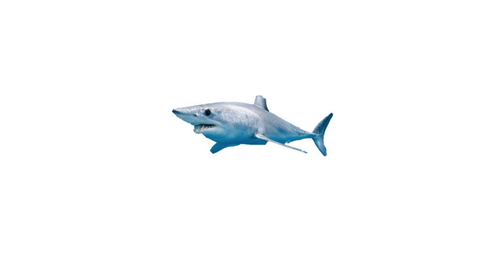

Mako Shark Info
AKA: Shortfin Mako Shark, Blue Pointer, Bonito Shark
Scientific Name: Isurus Oxyrinchus
Adult Mass: 60-140 kg
Family: Lamnidae
Class: Chondrichthyes
Order: Lamniformes
Phylum: Chordata
